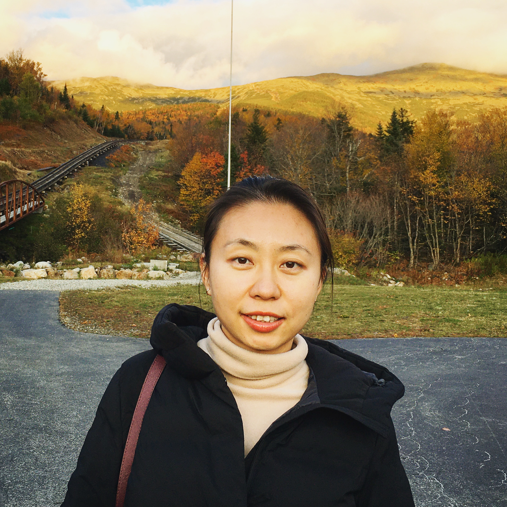

|  |
Ming Huo Visiting Assistant Professor Western New England University ming.huo [the magic symbol] wne.edu |
I am a Mathematian and obtained my Ph.D. in Mathematics in 2019 from the University of Nevada, Las Vegas. I am currently a Visiting Assistant Professor at Western New England University. My primary research interests are in complex function space and operator theory. My previous work mainly lies in the composition operator and its functional properties in a Bergman-type Hilbert reproducing kernel space. In my previous research, I characterized the difference of weighted composition operators acting on a general weigthted Bergman space; specifically, the boundedness, compactness and Hilbert-Schmidt norm.